배우기 전에 먼저 해 보세요. 틀려도 괜찮아요.
die geteilte Stadt는 무슨 뜻일까요?
Partizip II를 형용사로 쓰면 이미 끝난 일이나 당한 일을 나타내요.
die wachsende Firma에서 회사는 지금 어떤가요?
Partizip I은 지금 이어지는 일을 나타내요.
B1.2 Perspektiven · Lektion 6
역사와 오늘
음성은 준비 중이에요. 듣기 단추와 받아쓰기는 음성이 올라오면 쓸 수 있어요. 그동안은 글을 읽으면서 공부해요.
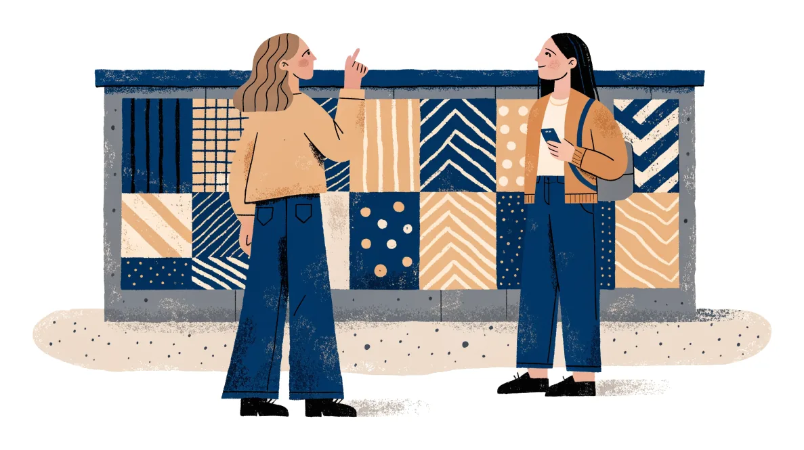
도시를 걷다 보면 역사를 만나요. 무너진 장벽, 다시 지은 옛 건물, 창업자의 이름이 적힌 회사 간판이 그래요. 역사를 이야기하는 글은 Präteritum으로 써요. 이 과에서는 begann, fiel, entstand 같은 모양을 넓히고, die geteilte Stadt, die wachsende Firma처럼 Partizip을 형용사로 쓰는 법을 배워요.
문법 Präteritum (Erzählen), Partizip I und II als Adjektiv
과제대학독일 통일에 대한 글을 읽고 요약하기
과제직장회사와 도시의 역사를 손님에게 소개하기
이 과를 마치면 역사적 사건을 이야기하고, 시대를 비교하고, 박물관 안내를 이해할 수 있어요.
이 과에서 쓸 말이에요.
배우기 전에 먼저 해 보세요. 틀려도 괜찮아요.
die geteilte Stadt는 무슨 뜻일까요?
Partizip II를 형용사로 쓰면 이미 끝난 일이나 당한 일을 나타내요.
die wachsende Firma에서 회사는 지금 어떤가요?
Partizip I은 지금 이어지는 일을 나타내요.
Lektion 5의 낱말 다섯 개를 다시 떠올려 보세요.
2028년 7월 말, 베를린이에요. Jiu와 Lena는 주말에 베를린에 왔어요. 그림이 그려진 장벽 앞에 서 있어요.
들으면서 찾아보세요. 라이프치히에서는 1989년에 무슨 일이 있었나요?
8월 초, 사무실이에요. 다음 주에 부산의 협력 회사 사람들이 프랑크푸르트에 와요. Dohyun이 회사와 도시를 안내하기로 했어요.
들으면서 찾아보세요. 프랑크푸르트의 옛 시가지 집들은 언제 다 지어졌나요?
8월의 목요일 저녁, Sprachcafé가 끝난 뒤예요. Sora와 Frau Becker가 잔을 치우며 이야기해요. Sora는 Frau Becker의 고향이 궁금했어요.
들으면서 찾아보세요. 장벽이 무너졌을 때 Frau Becker는 몇 살이었나요?
세 대화를 듣고 답하세요.
베를린 장벽은 언제 지어졌나요?
An der Berliner Mauer ist niemand gestorben.
적어도 백사십 명이 목숨을 잃었어요.
1989년에 라이프치히에서는 무슨 일이 있었나요?
Kessler Technik은 어떻게 시작했나요?
Die Häuser zwischen Dom und Römer sind seit dem Mittelalter unverändert.
전쟁 때 부서져서 다시 지었고 2018년에 다 됐어요.
1848년에 Paulskirche에서는 무슨 일이 있었나요?
장벽이 무너졌을 때 Frau Becker는 몇 살이었나요?
Nach der Einheit verlor die Mutter von Frau Becker ihre Arbeit.
낱말 51개예요. 명사는 der, die, das를 색으로 구분했어요.
die Geschichte 역사, 이야기
Ich interessiere mich für Geschichte.저는 역사에 관심이 있어요.
das Jahrhundert, die Jahrhunderte 세기
Das Haus ist aus dem 18. Jahrhundert.그 집은 18세기에 지어졌어요.
die Vergangenheit 과거
Aus der Vergangenheit kann man lernen.과거에서 배울 수 있어요.
die Gegenwart 현재
Die Ausstellung zeigt Kunst der Gegenwart.그 전시는 오늘의 미술을 보여 줘요.
die Epoche, die Epochen 시대
Jede Epoche hat ihre Probleme.시대마다 문제가 있어요.
der Krieg, die Kriege 전쟁
Im Krieg wurde die Stadt zerstört.전쟁 때 도시가 부서졌어요.
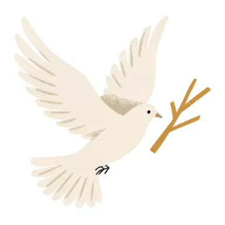
der Frieden 평화
Alle wünschen sich Frieden.모두가 평화를 바라요.
der Staat, die Staaten 나라, 국가
1949 entstanden zwei deutsche Staaten.1949년에 독일에 두 나라가 생겼어요.
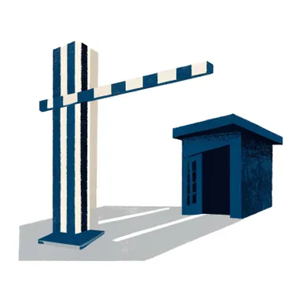
die Grenze, die Grenzen 국경, 경계
Die Grenze war geschlossen.국경이 닫혀 있었어요.
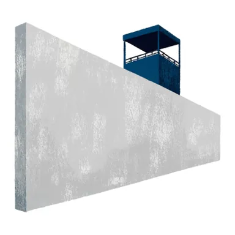
die Mauer, die Mauern 장벽, 담
Die Mauer fiel 1989.장벽은 1989년에 무너졌어요.
die Teilung 분단
Die Teilung dauerte über vierzig Jahre.분단은 마흔 해 넘게 이어졌어요.
die Einheit 하나 됨, 통일
Der 3. Oktober ist der Tag der Deutschen Einheit.10월 3일은 독일 통일의 날이에요.
die Wiedervereinigung 다시 하나가 됨, 재통일
Die Wiedervereinigung kam 1990.재통일은 1990년에 왔어요.
die Freiheit 자유
Die Menschen demonstrierten für Freiheit.사람들은 자유를 위해 시위했어요.
die Diktatur, die Diktaturen 독재
Das Land war lange eine Diktatur.그 나라는 오랫동안 독재 국가였어요.
die Revolution, die Revolutionen 혁명
1989 gab es eine friedliche Revolution.1989년에 평화로운 혁명이 있었어요.
friedlich 평화로운
Die Demonstration blieb friedlich.시위는 끝까지 평화로웠어요.
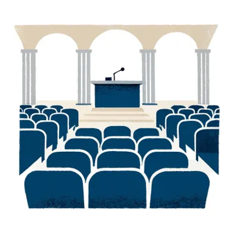
das Parlament, die Parlamente 의회
Das Parlament wird alle vier Jahre gewählt.의회는 4년마다 뽑아요.
fliehen (ist geflohen) 달아나다, 피난하다
Viele Menschen flohen in den Westen.많은 사람이 서쪽으로 달아났어요.
die Flucht 탈출, 피난
Die Flucht war gefährlich.탈출은 위험했어요.
sterben (du stirbst, ist gestorben) 죽다
Goethe starb 1832.괴테는 1832년에 죽었어요.
kämpfen (hat gekämpft) 싸우다
Sie kämpften für ihre Rechte.그 사람들은 자기 권리를 위해 싸웠어요.
besetzen (hat besetzt) 점령하다
Nach dem Krieg wurde das Land besetzt.전쟁 뒤에 그 나라는 점령됐어요.
schließen (hat geschlossen) 닫다
Die Fabrik wurde 1991 geschlossen.그 공장은 1991년에 문을 닫았어요.
entstehen (ist entstanden) 생겨나다
Hier entstand ein neuer Stadtteil.여기에 새 동네가 생겼어요.
enden (hat geendet) 끝나다
Der Krieg endete 1945.전쟁은 1945년에 끝났어요.
aufbauen (hat aufgebaut) 세우다, 다시 짓다
Die Kirche wurde wieder aufgebaut.그 교회는 다시 지어졌어요.
der Wiederaufbau 다시 짓는 일, 재건
Der Wiederaufbau dauerte viele Jahre.재건은 여러 해가 걸렸어요.
der Gründer, die Gründer 세운 사람
Der Gründer der Firma hieß Kessler.회사를 세운 사람의 이름은 Kessler였어요.
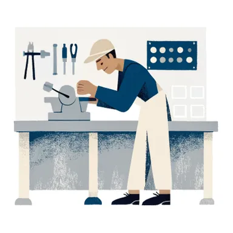
die Werkstatt, die Werkstätten 작업장
Er begann in einer kleinen Werkstatt.그 사람은 작은 작업장에서 시작했어요.
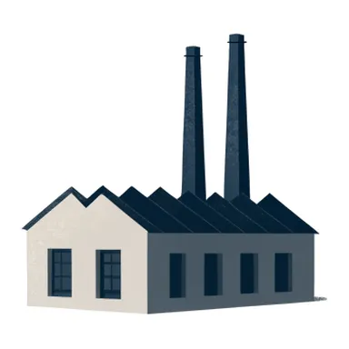
die Fabrik, die Fabriken 공장
In der Fabrik arbeiteten tausend Menschen.그 공장에서 천 명이 일했어요.
das Gebäude, die Gebäude 건물
Das Gebäude ist hundert Jahre alt.그 건물은 백 년 됐어요.
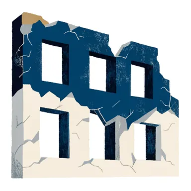
die Ruine, die Ruinen 폐허
Von der Burg ist nur eine Ruine geblieben.그 성은 폐허만 남았어요.
der Soldat, die Soldaten 군인
An der Grenze standen Soldaten.국경에 군인들이 서 있었어요.
geboren 태어난
Goethe wurde 1749 in Frankfurt geboren.괴테는 1749년에 프랑크푸르트에서 태어났어요.
die Erinnerung, die Erinnerungen 기억, 추억
Ich habe schöne Erinnerungen an Berlin.베를린에 좋은 추억이 있어요.
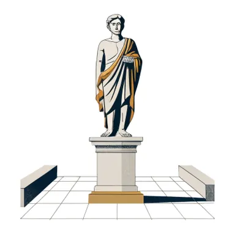
das Denkmal, die Denkmäler 기념물
Auf dem Platz steht ein Denkmal.광장에 기념물이 서 있어요.
die Gedenkstätte, die Gedenkstätten 추모 기념관
Wir besuchen die Gedenkstätte an der Mauer.우리는 장벽에 있는 추모 기념관에 가요.
der Zeitzeuge, die Zeitzeugen 그때를 겪은 사람
Ein Zeitzeuge erzählt von 1989.그때를 겪은 분이 1989년 이야기를 해요.
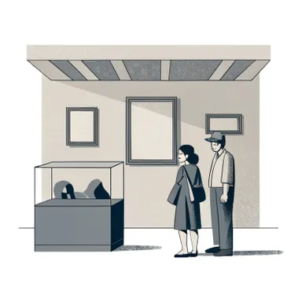
die Ausstellung, die Ausstellungen 전시
Die Ausstellung zeigt alte Fotos.그 전시는 옛 사진을 보여 줘요.
der Rundgang, die Rundgänge 한 바퀴 둘러보기
Der Rundgang dauert eine Stunde.둘러보는 데 한 시간이 걸려요.
der Eintritt 입장, 입장료
Der Eintritt ist frei.입장료는 없어요.
die Ermäßigung, die Ermäßigungen 할인
Studenten bekommen eine Ermäßigung.학생은 할인을 받아요.
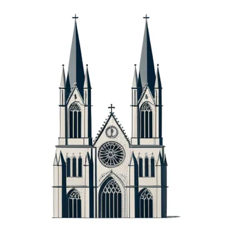
der Dom, die Dome 대성당
Der Dom steht mitten in der Altstadt.대성당은 옛 시가지 한가운데에 있어요.
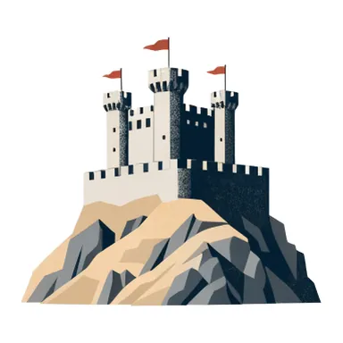
die Burg, die Burgen 성, 요새
Auf dem Berg steht eine alte Burg.산 위에 오래된 성이 있어요.
das Mittelalter 중세
Die Stadt entstand im Mittelalter.그 도시는 중세에 생겼어요.
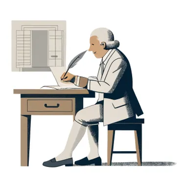
der Dichter, die Dichter 시인, 작가
Goethe ist der bekannteste deutsche Dichter.괴테는 가장 잘 알려진 독일 작가예요.
das Jubiläum, die Jubiläen 몇 주년 기념일
Die Firma feiert ihr Jubiläum.회사가 창립 기념일을 축하해요.
heutzutage 요즘은
Heutzutage reist man viel schneller.요즘은 훨씬 빨리 다녀요.
bekannt 잘 알려진
Die Paulskirche ist sehr bekannt.Paulskirche는 아주 잘 알려져 있어요.
bedeutend 뜻깊은, 중요한
Das war ein bedeutendes Ereignis.그건 중요한 사건이었어요.
이 과의 낱말로 여덟 문제를 풀어요.
규칙 동사는 -te가 붙고, 불규칙 동사는 모음이 바뀌어요.
Partizip II는 끝난 일, Partizip I은 이어지는 일이에요.
규칙
B1.1 3과에서 Präteritum을 배웠어요. 말할 때는 지난 일을 대개 Perfekt로 이야기하지만, 역사책, 기사, 박물관의 안내문, 살아온 이야기를 적은 글은 Präteritum으로 써요. 길게 이야기를 들려줄 때도 Präteritum이 어울려요. 규칙 동사는 -te가 붙고, 불규칙 동사는 모음이 바뀌어요. ich와 er, sie, es의 모양이 같아요.
| Infinitiv | Präteritum | Perfekt |
|---|---|---|
| bauen | baute | hat gebaut |
| gründen | gründete | hat gegründet |
| beginnen | begann | hat begonnen |
| fallen | fiel | ist gefallen |
| fliehen | floh | ist geflohen |
| entstehen | entstand | ist entstanden |
주의 자주 나오는 불규칙 동사를 더 알아 두세요. sterben은 starb, ziehen은 zog, sitzen은 saß, treffen은 traf, verlieren은 verlor, springen은 sprang, schießen은 schoss예요. 한 글에서 Präteritum과 Perfekt를 섞지 않는 것이 좋아요.
규칙을 보고 바로 확인해 보세요.
Am 9. November 1989 … die Mauer. 빈칸에 알맞은 말은 무엇인가요?
규칙
역사를 이야기할 때는 누가 했는지보다 무슨 일이 일어났는지가 중요할 때가 많아요. 그래서 Passiv의 Präteritum을 자주 써요. wurde나 wurden이 둘째 자리에 오고 Partizip II가 문장 끝에 와요. 누가 했는지는 von으로 덧붙여요.
| 하나 | 여럿 |
|---|---|
| Die Mauer wurde gebaut. | Die Häuser wurden zerstört. |
| Die Firma wurde gegründet. | Viele Familien wurden getrennt. |
| Goethe wurde 1749 geboren. | Die Grenzen wurden geöffnet. |
주의 태어났다는 말은 늘 Passiv로 해요. Ich wurde 1998 in Seoul geboren. 살아 있는 사람이 자기 이야기를 할 때는 Ich bin 1998 geboren.이라고도 해요. 세운 사람을 말할 때는 von을 써요. Die Firma wurde von Wilhelm Kessler gegründet.
규칙을 보고 바로 확인해 보세요.
Die Firma … 1962 gegründet. 빈칸에 알맞은 말은 무엇인가요?
규칙
Partizip II는 명사 앞에서 형용사처럼 쓸 수 있어요. 이미 끝난 일이나 당한 일을 나타내요. die geteilte Stadt는 die Stadt, die geteilt wurde와 같은 뜻이에요. 명사 앞에 오니까 다른 형용사와 똑같이 끝이 바뀌어요. 앞에 neu, frei, wieder 같은 말을 붙일 수 있어요.
| 관계문 | Partizip II |
|---|---|
| die Stadt, die geteilt wurde | die geteilte Stadt |
| die Kirche, die zerstört wurde | die zerstörte Kirche |
| das Haus, das neu gebaut wurde | das neu gebaute Haus |
| ein Land, das geteilt ist | ein geteiltes Land |
주의 글에서 문장을 짧게 줄일 때 쓰는 틀이에요. 박물관의 안내문과 기사에 많이 나와요. die 1962 gegründete Firma는 '1962년에 세워진 회사'예요. 읽을 때는 Partizip에서 명사까지를 한 덩어리로 보세요.
규칙을 보고 바로 확인해 보세요.
Korea ist immer noch ein … Land. 빈칸에 알맞은 말은 무엇인가요?
규칙
Partizip I은 Infinitiv에 d를 붙여서 만들어요. wachsen은 wachsend, feiern은 feiernd, folgen은 folgend가 돼요. 명사 앞에 오면 형용사처럼 끝이 붙어요. 그때 한창 하고 있는 일을 나타내요. die wachsende Firma는 die Firma, die wächst와 같은 뜻이에요.
| 관계문 | Partizip I |
|---|---|
| die Firma, die wächst | die wachsende Firma |
| die Menschen, die feiern | die feiernden Menschen |
| das Kind, das spielt | das spielende Kind |
| die Jahre, die folgen | die folgenden Jahre |
주의 둘을 가려 쓰세요. Partizip I은 스스로 하고 있는 일이고, Partizip II는 끝났거나 당한 일이에요. die schließende Tür는 지금 닫히고 있는 문이고, die geschlossene Tür는 닫혀 있는 문이에요.
규칙을 보고 바로 확인해 보세요.
Die … Jahre waren schwer. 빈칸에 알맞은 말은 무엇인가요?
듣고 알맞은 것을 고르세요.
아침에 베를린은 어떻게 돼 있었나요?
Am Morgen war Berlin eine geteilte Stadt.
Wilhelm Kessler는 어디서 시작했나요?
Er begann mit fünf Mitarbeitern in einer kleinen Werkstatt.
언제가 힘들었나요?
Die folgenden Jahre waren schwer.
그 집들은 어떤 집인가요?
Die wieder aufgebauten Häuser sind erst seit 2018 fertig.
프랑크푸르트 역사 박물관의 안내예요. 듣고 답하세요.
Die Führung beginnt
Museumsführerin Herzlich willkommen im Historischen Museum. Mein Name ist Keller, ich begleite Sie heute.
Museumsführerin Unser Rundgang dauert fünfundvierzig Minuten. Im ersten Raum sehen Sie die Stadt im Mittelalter. Damals lebten hier ungefähr zehntausend Menschen.
Museumsführerin Im zweiten Raum geht es um das Jahr 1848. In der Paulskirche traf sich das erste frei gewählte Parlament.
Museumsführerin Der dritte Raum zeigt die zerstörte Stadt nach dem Krieg und den Wiederaufbau.
Museumsführerin Fotografieren ist erlaubt, aber bitte ohne Blitz. Studierende bekommen an der Kasse eine Ermäßigung.
Wie lange dauert der Rundgang?
Was sieht man im ersten Raum?
Im Mittelalter lebten in der Stadt ungefähr zehntausend Menschen.
Was zeigt der dritte Raum?
Im Museum darf man nicht fotografieren.
플래시 없이 찍어도 돼요.
독일의 분단과 통일을 짧게 정리한 글이에요. 읽고 답하세요.
Teilung und Einheit
Nach dem Zweiten Weltkrieg wurde Deutschland geteilt. 1949 entstanden zwei Staaten: die Bundesrepublik im Westen und die DDR im Osten.
In den folgenden Jahren flohen viele Menschen aus der DDR in den Westen. Deshalb baute die DDR im August 1961 die Mauer.
28 Jahre lang trennte die Mauer Familien und Freunde. Reisen in den Westen waren für die meisten Menschen verboten.
Im Herbst 1989 demonstrierten immer mehr Menschen friedlich für Freiheit. Am 9. November 1989 fiel die Mauer.
Am 3. Oktober 1990 wurde Deutschland wieder ein Staat. Seitdem ist der 3. Oktober ein Feiertag.
Wann entstanden die zwei deutschen Staaten?
Warum baute die DDR die Mauer?
Die Mauer stand 28 Jahre lang.
Wie demonstrierten die Menschen 1989?
Seit dem 9. November 1989 ist Deutschland wieder ein Staat.
다시 한 나라가 된 것은 1990년 10월 3일이에요.
괄호 안의 동사를 Präteritum으로 쓰세요.
1989 die Mauer. (fallen)
1989년에 장벽이 무너졌어요.
Die Firma mit fünf Mitarbeitern. (beginnen)
회사는 직원 다섯 명으로 시작했어요.
Viele Menschen in den Westen. (fliehen)
많은 사람이 서쪽으로 달아났어요.
Der Krieg 1945. (enden)
전쟁은 1945년에 끝났어요.
t나 d 뒤에는 e가 하나 더 들어가요.
1949 zwei deutsche Staaten. (entstehen)
1949년에 독일에 두 나라가 생겼어요.
1985 die Firma in ein neues Gebäude. (ziehen)
1985년에 회사는 새 건물로 옮겼어요.
역사 속의 Passiv예요. 알맞은 말을 고르세요.
Die Mauer 1961 gebaut.
장벽은 1961년에 지어졌어요.
Viele Familien getrennt.
많은 가족이 갈라졌어요.
Goethe wurde 1749 in Frankfurt .
괴테는 1749년에 프랑크푸르트에서 태어났어요.
Die Firma wurde Wilhelm Kessler gegründet.
회사는 Wilhelm Kessler가 세웠어요.
Nach der Einheit viele Fabriken geschlossen.
통일 뒤에 많은 공장이 문을 닫았어요.
Partizip II의 끝을 맞게 고르세요.
Berlin war eine Stadt.
베를린은 나뉜 도시였어요.
Korea ist ein Land.
한국은 나뉜 나라예요.
Wir gehen durch die wieder Altstadt.
우리는 다시 지은 옛 시가지를 걸어요.
Im Flur hängen Fotos von dem neu Gebäude.
복도에 새로 지은 건물의 사진이 걸려 있어요.
von 뒤는 Dativ예요.
Das ist die 1962 Firma.
그게 1962년에 세워진 회사예요.
Die Häuser wurden wieder aufgebaut.
부서진 집들이 다시 지어졌어요.
이어지는 일인지 끝난 일인지 보고 고르세요.
Die Straße war voll mit Autos.
길은 경적을 울리는 차들로 가득했어요.
Die Kirche wurde nach dem Krieg wieder aufgebaut.
부서진 교회는 전쟁 뒤에 다시 지어졌어요.
In den Jahren flohen viele Menschen.
그 뒤의 몇 해 동안 많은 사람이 달아났어요.
Im Hof sieht man Kinder.
마당에 놀고 있는 아이들이 보여요.
Die Fabrik steht heute leer.
문을 닫은 공장은 오늘 비어 있어요.
같은 뜻끼리 짝지으세요.
낱말을 순서대로 눌러 문장을 만드세요.
회사는 1962년에 세워졌어요.
1989년에 장벽이 무너졌어요.
베를린은 나뉜 도시였어요.
커 가는 회사에 자리가 더 필요했어요.
괴테는 1749년에 프랑크푸르트에서 태어났어요.
뜻이 반대인 말을 짝지으세요.
빈칸에 알맞은 낱말을 쓰세요.
Das Haus ist aus dem 18. .
그 집은 18세기에 지어졌어요.
Der ist frei.
입장료는 없어요.
Die Menschen demonstrierten für .
사람들은 자유를 위해 시위했어요.
Auf dem Platz steht ein .
광장에 기념물이 서 있어요.
듣고 그대로 써 보세요.
음성 준비 중In einer einzigen Nacht wurde die Grenze geschlossen. 단 하룻밤 사이에 경계가 닫혔어요.
음성 준비 중Korea ist ein geteiltes Land. 한국은 나뉜 나라예요.
음성 준비 중Die wachsende Firma brauchte mehr Platz. 커 가는 회사에 자리가 더 필요했어요.
Im Jahr 1961 wurde die Mauer gebaut. 1961년에 장벽이 지어졌어요.
28 Jahre später fiel sie. 28년 뒤에 무너졌어요.
Zuerst … Dann … Schließlich … 먼저 … 그다음에 … 마침내 …
Das war ein bedeutendes Ereignis. 그건 중요한 사건이었어요.
Damals gab es noch kein Internet. 그때는 아직 인터넷이 없었어요.
Heutzutage ist das ganz anders. 요즘은 아주 달라요.
Im Vergleich zu früher leben wir sicherer. 예전과 견주면 우리는 더 안전하게 살아요.
Manches ist gleich geblieben. 그대로인 것도 있어요.
Wie lange dauert der Rundgang? 둘러보는 데 얼마나 걸려요?
Gibt es eine Ermäßigung für Studierende? 학생 할인이 있나요?
Darf man hier fotografieren? 여기서 사진을 찍어도 되나요?
Aus welchem Jahrhundert ist das? 이건 몇 세기 것인가요?
In dem Text geht es um die deutsche Teilung. 이 글은 독일의 분단을 다뤄요.
Der Text beschreibt, wie die Mauer entstand. 이 글은 장벽이 어떻게 생겼는지 설명해요.
Am Ende steht, dass Deutschland 1990 wieder ein Staat wurde. 끝에는 독일이 1990년에 다시 한 나라가 됐다고 적혀 있어요.
Kurz gesagt: Die Teilung dauerte über vierzig Jahre. 짧게 말하면 분단은 마흔 해 넘게 이어졌어요.
Unsere Firma wurde 1962 gegründet. 우리 회사는 1962년에 세워졌어요.
Hier sehen Sie das älteste Gebäude der Stadt. 여기 이 도시에서 가장 오래된 건물이 있습니다.
Die Altstadt wurde im Krieg zerstört und später wieder aufgebaut. 옛 시가지는 전쟁 때 부서졌다가 나중에 다시 지어졌어요.
Haben Sie noch Fragen? 더 궁금한 점이 있으신가요?
과제 고르기
역할 대화와 말하기, 쓰기 과제는 대학 생활과 직장 생활 두 가지예요. 하나를 고르면 다음 과에서도 그쪽 과제가 나와요. 언제든 바꿀 수 있어요.
대화 A에서 역할을 하나 고르세요. 상대의 말은 글로 읽고, 내 차례에는 직접 말해요.
대화 B에서 역할을 하나 고르세요. 상대의 말은 글로 읽고, 내 차례에는 직접 말해요.
내 나라나 내 삶에서 중요한 해를 하나 골라 칸을 채우세요. 완성된 문장을 소리 내어 읽어 보세요.
Im Jahr 1988 fanden in Seoul die Olympischen Spiele statt.
Damals gab es noch keine Handys.
Heutzutage hat fast jeder ein Smartphone.
세미나에서 「Teilung und Einheit」라는 글을 읽었어요. 앞의 읽기 문제에 나온 글이에요. Lena가 그 글에 무슨 내용이 있었는지 물어요.
글의 뼈대는 다섯 가지예요. 1949년에 두 나라가 생겼어요. 많은 사람이 서쪽으로 달아나서 1961년에 장벽이 세워졌어요. 장벽은 28년 동안 서 있었어요. 1989년에 사람들이 평화롭게 시위했고 11월 9일에 장벽이 무너졌어요. 1990년 10월 3일에 다시 한 나라가 됐어요.
Lena가 물어요. 쪽지를 보고 답하세요. 질문을 듣고 소리 내어 답한 뒤 예시 답과 비교해 보세요.
Was habt ihr heute im Seminar gelesen? 오늘 세미나에서 뭘 읽었어요?
Einen Text über die deutsche Teilung. Es ging um die Jahre von 1949 bis 1990.
Und wie begann die Teilung? 분단은 어떻게 시작됐어요?
Nach dem Krieg wurde Deutschland geteilt. 1949 entstanden zwei Staaten.
Warum wurde die Mauer gebaut? 장벽은 왜 지어졌어요?
Weil viele Menschen aus der DDR in den Westen flohen. Deshalb baute die DDR 1961 die Mauer.
Und wie endete das alles? 그 일은 어떻게 끝났어요?
1989 demonstrierten die Menschen friedlich. Am neunten November fiel die Mauer.
Was denkst du als Koreanerin darüber? 한국 사람으로서 어떻게 생각해요?
Für mich ist das mehr als Geschichte. Korea ist immer noch ein geteiltes Land.
Eine Zusammenfassung
「Teilung und Einheit」를 읽고 여섯 문장쯤으로 요약해 보세요. 글을 그대로 옮기지 말고 내 말로 써요.
In dem Text geht es um die deutsche Teilung und die Einheit. Nach dem Zweiten Weltkrieg entstanden 1949 zwei deutsche Staaten. Weil viele Menschen in den Westen flohen, wurde 1961 die Mauer gebaut. 28 Jahre lang lebten die Menschen in einem geteilten Land. Im Herbst 1989 demonstrierten immer mehr Menschen friedlich, und am 9. November fiel die Mauer. Ein Jahr später, am 3. Oktober 1990, wurde Deutschland wieder ein Staat.
다 쓴 뒤에 확인해 보세요.
다음 주에 한국에서 손님들이 와요. 내가 회사와 도시를 안내해요. 회사는 1962년에 Wilhelm Kessler가 작은 작업장에서 직원 다섯 명과 세웠어요. 1985년에 지금 건물로 옮겼고, 지금은 직원이 백이십 명쯤이에요.
도시에서는 옛 시청 Römer와 Paulskirche를 보여 주려고 해요. Paulskirche에서는 1848년에 자유롭게 뽑힌 첫 의회가 모였어요. 옛 시가지는 전쟁 때 부서졌다가 다시 지어졌어요. 괴테는 1749년에 이 도시에서 태어났어요.
손님이 물어요. 쪽지를 보고 답하세요. 질문을 듣고 소리 내어 답한 뒤 예시 답과 비교해 보세요.
Wie alt ist Ihre Firma? 회사는 얼마나 됐나요?
Unsere Firma wurde 1962 von Wilhelm Kessler gegründet. Er begann mit fünf Mitarbeitern.
Und seit wann sind Sie in diesem Gebäude? 이 건물에는 언제부터 계셨나요?
Seit 1985. Die wachsende Firma brauchte damals mehr Platz. Heute arbeiten hier ungefähr hundertzwanzig Menschen.
Was ist das für eine Kirche? 이건 무슨 교회인가요?
Das ist die Paulskirche. Hier traf sich 1848 das erste frei gewählte deutsche Parlament.
Die Häuser hier sehen sehr alt aus. 여기 집들은 아주 오래돼 보이네요.
Sie sind neu. Die Altstadt wurde im Krieg zerstört und später wieder aufgebaut.
Gibt es hier einen berühmten Dichter? 여기 유명한 작가가 있나요?
Ja, Goethe. Er wurde 1749 in Frankfurt geboren. Sein Haus kann man besichtigen.
Unsere Firma und unsere Stadt
손님에게 미리 보낼, 회사와 도시를 소개하는 글을 써 보세요. 일곱 문장쯤 써요.
Liebe Gäste, herzlich willkommen in Frankfurt. Unsere Firma wurde 1962 von Wilhelm Kessler gegründet. Er begann mit fünf Mitarbeitern in einer kleinen Werkstatt. 1985 zog die wachsende Firma in das heutige Gebäude. Heutzutage arbeiten hier ungefähr 120 Menschen. Am Nachmittag zeigen wir Ihnen die Stadt. In der Paulskirche traf sich 1848 das erste frei gewählte deutsche Parlament. Die im Krieg zerstörte Altstadt wurde später wieder aufgebaut. Wir freuen uns auf Ihren Besuch. Mit freundlichen Grüßen, Minji Choi
다 쓴 뒤에 확인해 보세요.
Ich kann von einem historischen Ereignis erzählen.역사적 사건을 이야기할 수 있어요.
Ich kann früher und heute vergleichen.예전과 지금을 비교할 수 있어요.
Ich kann die wichtigsten Informationen einer Führung verstehen.안내에서 중요한 내용을 알아들을 수 있어요.
Ich kann einen kurzen Text über Geschichte zusammenfassen.역사에 대한 짧은 글을 요약할 수 있어요.